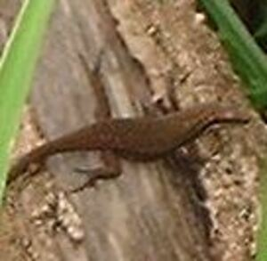
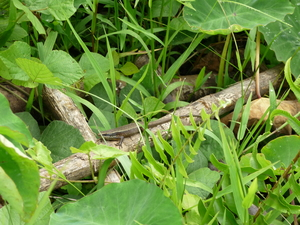

ammahal  
/ʔammagal/
n.
“a_lizard”
n.
a shiny dark lizard that usually staying along the pathways; it feed frogs and insects
Naaldek a te ammahal diyè te dalan su kahiyen ku ne uled.
I am scared with the lizard on the road for I expect that it was snake.
Wrd.Gloss: a_lizard
Cult. 6 in., black, lives in the ground but climbs trees
cf. ambekang —tree
cf. damuluhan —ground
cf. ibid —water
cf. palabasan —water
cf. tektek
Eng. lizard variety
Tag. butikî; bubulí
Ceb. butiki
OCM: Fauna (136)
DDP: Lizard (1.6.1.3.2)
Online dict status: -
Usage level: MT
Updated by: RJH,AAA,QDL
Last updated: 10/Sep/2009
This page last updated: 19/May/2012
Copyright © 2009-2010, Matigsalug Language Christian Association, Inc